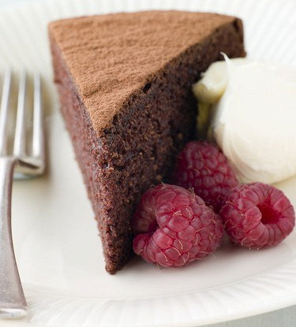

Растопите измельченный шоколад и сливочное масло на водяной бане.
Перелейте в миску.
В шоколадную массу добавьте сахар и перемешайте деревянной
ложкой. Слегка
охладите.
Затем добавьте по одному яйца, хорошо перемешивая после каждого.
Добавьте муку.
Вылейте тесто в прямоугольную, застеленную пергаментом форму и
выпекайте
25-30 минут до готовности, но середина пирога должна оставаться слегка мягкой.
Охладите, но будьте осторожны — пока пирог теплый, он очень
нежный и
хрупкий.

Алгоритм приготовления
Разогрейте духовку до 190 градусов.
Растопите измельченный шоколад и сливочное масло на водяной бане.
Перелейте в миску.
В шоколадную массу добавьте сахар и перемешайте деревянной ложкой. Слегка
охладите.
Затем добавьте по одному яйца, хорошо перемешивая после каждого.
Добавьте муку.
Вылейте тесто в прямоугольную, застеленную пергаментом форму и выпекайте
25-30 минут до готовности, но середина пирога должна оставаться слегка мягкой.
Охладите, но будьте осторожны — пока пирог теплый, он очень нежный и
хрупкий.